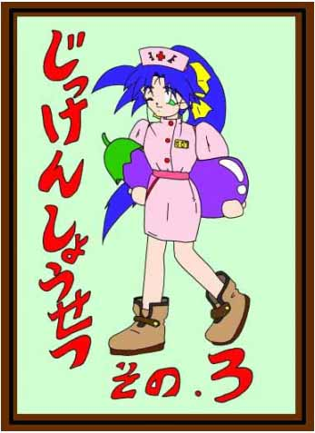
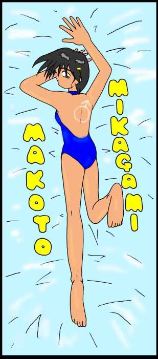
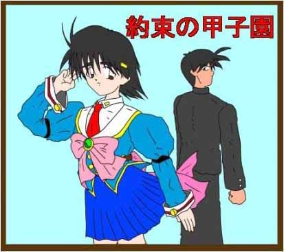
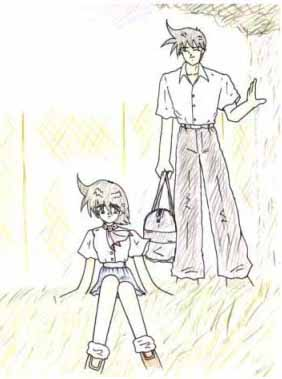
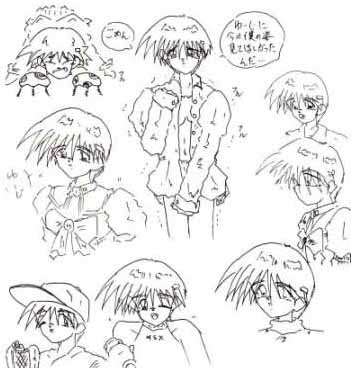
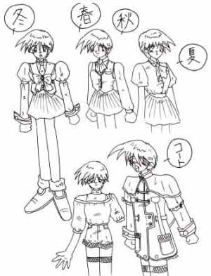
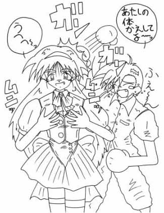
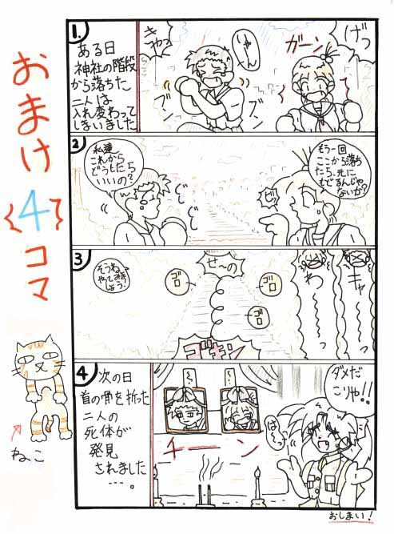

約束の甲子園
１．星島 裕次
４年前・・・
キーン
かん高い金属音と共に、白球は大空に消えていく
わき上がるチームメイト、ホームラン
そこに、俺とあいつはいた
帰り道・・・
「やっぱり、裕次は凄いや！ここぞと言うとき、打ってくれるんだもん」
「真、それは嫌味か！ノーヒット、ノーランやった奴に、そんなこと言われたくないよ！」
「裕次のリ−ドが良かったんだよ」
「まぁ、この最強バッテリーに敵は無いからな！」
「そうだね、僕達このままずーと、野球続けられたらいいのにね」
「当たり前だ、俺達は、甲子園に出るんだからな！」
「いいねそれっ、約束だよ！」
「ああっ、約束だ！」
ガキの頃のたわいのない約束・・・
その２ヶ月後、俺は親父の仕事の都合で転校した・・・
２．星島 裕次
あれから四年経った・・・・
俺は、転校先で甲子園に何度も出ている高校に入った
しかし、そこは徹底した管理野球をし、選手は監督のコマとしてしか扱われてなかった
俺も、そうだった・・・・
そこには、俺が４年前までやってきた、楽しい野球は無かった
それが嫌だった
あいつに会いたい
４年たったあいつは、どんな球を投げるんだろう・・・
小さいながらも、体全体をバネのように、しならせて投げる速球
キャッチャーミット越しに伝わる、衝撃、音、今でも覚えている
また、あいつの球を受けてみたい・・・
想いだけが、膨らむ・・・
気持ちだけが、はやる・・・
あいつに会いたい・・・
３．美鏡 真
あれから、４年経った・・・
４年の間、何度も裕次から手紙をもらった
その手紙には、野球への想いがたくさん書かれていた
ボクは、その手紙に励まされた・・・
裕次が、野球でがんばっているのを読んで・・・
裕次に、会いたい・・・
でも、会えない・・・
ボクは、嘘をついている
だから、会えない・・・
４．星島 裕次
それは、ささいな出来事だった・・・
監督が、次の試合で俺を使うと言ったのだ・・・
俺は、どうでも良かったのだが、
先輩達は、１年の俺が先輩を、押しのけて試合に出るのが気に入らなかったらしい
その日の帰り、俺は先輩達に囲まれた
有名校と言うだけあって、選手層は厚い
だが、試合に出られるのは９人だけだ、だからこういう潰し合いも良くある事だ
「星島、お前、最近生意気だぞ！」
今回、レギュラー落ちした先輩が言う
周りの奴等は、ニヤニヤしている
こういう輩は、どうも一人では何もできないらしい
監督に個性を消され、自分の意志は持たず、集団の中でしか安心感を得られない奴等だ
ただ、野球をやるだけのロボット
だが、プライドだけは人並み以上ある
俺は、こんな奴らが嫌いだった
そんな中にいる、俺が嫌だった
「先輩、どうしても次の試合に出たかったら、譲りますよ」
どうでも良かった・・・
このチームで、野球をやっても何も得られない
楽しくない野球をやっても、意味がない
息巻く先輩、その中の一人が手を出すと、次々と手が出る
集団心理という奴だ、全てを周りのせいにして自分を正当化する、まさに無個性の典型だ
どうでも良かった・・・
俺は、１０人居た先輩達を、全員殴り倒した
次の日・・・
監督に部をやめろと言われた
監督にとって、俺の価値などそんな物だったのだ
俺が駄目なら次がいる、代わりなどいくらでもいるのだから・・・
これで、踏ん切りがついた
野球の推薦で入った高校だ、野球の出来ない奴をおいとくほど、この高校は酔狂ではない
一週間後、俺はこの高校を辞めた
未練は、無い・・・
これで、あいつに会える・・・
これで、また、あいつと野球が出来る・・・
それが、嬉しかった
あいつに会うのが、楽しみだ・・・
５．美鏡 真
今日、裕次から手紙が届いた
１月に、ボクの通う高校に転入すると書いてあった
嬉しかった、裕次にまた会える
小さかった頃から、大きかった裕次
いつもその後を、僕は追いかけていた
裕次は、僕の憧れだった
高鳴る胸・・・
募る思い・・・
４年間、つもりつもった想い・・・
会いたい・・・
裕次に会いたい・・・
でも、会えない・・・
６．星島 裕次
俺は、４年前いたこの町に戻るために、じーさんの家に居候することにした
転校初日、高校の下見がてら、朝早く家を出る
あいつには、今日登校することは、言ってない
４年ぶりに会うあいつを、びっくりさせるためだ
あいつのことを考えながら、ゆるい坂道を登ると真新しい校舎が見える
今日から俺が通う高校、私立桐生台高校だ
去年新設されたばかりの高校だそうだ
俺は、校門をくぐり、そのままグランドに行ってみる
きれいに整地されたグランド、高いバックネット、設備はなかなかなもんだ
ふっと、グランドの隅に目をやると、制服姿の女の子がトンボ掛けをしている
この場に、あまり似つかわしくない・・・
暇つぶしにその女の子を観察してみる
ショートカットで、背の小さな女の子が、寒い中、額に汗を流して一生懸命トンボ掛けをしている
ボーッと、その女の子を見ていると、俺に気付いたのか、女の子は俺に近づいてくる
「おはよ〜、こんな早く学校に来てなにしてんの？」
「ああっ、俺は今日からこの学校に世話になるから、下見がてらブラブラしてただけなんだ」
「ふ〜〜ん、そっか」
「この学校、良いところだよ、校舎も新しいし、先生もいい人ばかりだし、きっと気に入ると思うよ」
「へ〜、良いとこずくめだな、でも、俺の気にしてることとはちょっと違うな」
「何が違うの？」
女の子は、キョトンと俺を見る
「教師や、校舎が、良いのに越したことはないが、俺が気にしてるのは、ここの野球部の事だ」
「野球部？」
「う〜〜ん、ボクが言うのも何だけど良いチームだと思うよ、新設校だからなかなか部員集まらなくて、
９人ぴったりだけど」
「そうか、真の奴がんばってんだなっ」
「えっ！」
風が吹く、冷たい風が・・・
７．美鏡 真
２年前、ボクは練習中に倒れた・・・
そのまま、入院したボクに、先生は今ボクが置かれている状況、そしてすぐにでも手術をした方が良いと
言った
先生が言うには、ボクは女性仮性半陰陽で、第二次成長期に入って、ボクの体は女性化し続け、このまま
でいると、同一性性障害を起こしかねないと言われた
父さんも、母さんも、ボクに手術を勧めた
ボクは、手術をしたくなかった
でも、このままでいると、父さんにも、母さんにも、迷惑をかけてしまうかもしれない・・・
だから、ボクは手術を受けた
入院は、２ヶ月続いた・・・
日に日に衰える筋肉、それに反して、ボクの体は、次第に女性化していく、体は丸みを帯びていき、胸も
少しずつ膨らんでいく
もう、昔のボクはもう居ない・・・
自暴自棄になっていく、ボクの唯一の支えは、裕次からの手紙だった
あの手紙を読んでいる時だけ、ボクは４年前の僕に戻ることが出来た
裕次に会いたい
でも、今のボクが会って、裕次はどう思うだろう・・・
４年前の約束を守るために、がんばっている裕次・・・
その裕次が、今のボクを許してくれるだろうか・・・
もう一緒に野球が出来ないと知って、裕次は許してくれるだろうか・・・
許してくれないだろう
ボクは、裕次を裏切ったのだから・・・
８．星島 裕次
その時、一陣の風が吹いた・・・
冬の冷たい風が・・・
さっきまでニコニコしていた女の子は、いきなりきびすを返すと、駆け足で立ち去ってしまった
俺の見間違いか女の子は、少し涙ぐんでいたように思えた
「俺、何か変なこと言ったかな？」
そんなことを思いながら、立ち去る女の子をボーッと見つめる・・・
９．星島 裕次
俺は、転校の手続きを済ませ、晴れてこの学校の一員になった
放課後、早速グランドに行ってみる
そこには、練習用の白いユニホームを着た野球部員がいた
俺は、その中の一人に入部について聞いてみた
するとその部員は、ニコニコしながら言う
「おー、君が星島裕次君か！」
「先生から聞いてるよ、俺はこの野球部のキャプテンをやっている、神馬だ！」
「よろしくな！」
キャプテンは、ニッコリ笑い言う
「よろしくお願いします」
「何、敬語使ってるんだ、ここにいる奴、俺を含めてみんな同い年だよ、ため口でいいよ」
「何せ、去年の夏出来たばかりの部だからな」
「まあ、みんなで甲子園めざしてがんばろうや！」
「はい！」
あの女の子が、言ったとうりなかなか良さそうな部だ
「まあ、今日は初日だから、ゆっくり見学でもしといてくれ」
「ああ、キャプテン、確かここに美鏡真って奴がいると思うんですけど、あいつまだ来てないんですか？」
「んっ、マネージャー？」
「マネージャーならまだ来てないぞ、そう言えば、いつもあいつ俺達より先に来てるのにおかしな〜」
「マネージャー？」
「キャプテン何言ってんですか、あいつはここのピッチャーじゃないんですか？」
「バカ言うなよ、ピッチャーは俺だけで、女のあいつにピッチャーが、出来るわけ無いじゃないか」
マネージャー？
女？
この人は、何を言ってるんだ
あいつは、男で、ここのピッチャーをやってるはずだ・・・
しかし、このキャプテンが嘘を言ってるとは思えない、だったら人違いか
そう思い俺は、これ以上キャプテンには聞かなかった
しかし、俺の知っている美鏡真は、一体どこに行ったんだろう・・・
俺は、一通り練習を見ると、家路についた
１０．美鏡 真
今日、無断で練習を休んだ
練習に出れば、裕次に絶対会う
それだけは、避けなくては、ならなかった
でも、ボクの事は、その内解ってしまうだろう
その事で、４年間積もった想いは、壊れてしまうだろう・・・
もっと、早く言えば良かった
でも、言えなっかた・・・
４年前の約束を守るためにがんばってる裕次に、とてもこの事は、言えなかった・・・
悪いのは全て、ボクなんだ
ごめん、裕次
ごめん、裕次・・・
だから、今日、全て話すよ・・・
たとえ、どんな結果が、待っていようとも・・・
１１．星島 裕次
家路についた俺は、ベットの上で、真の事を考えていた
なぜ、キャプテンが、真の事をマネージャーで、女だなんて言ったのか、俺の知っている真は、どこに
行ったのか、そんな事を考えていると、玄関から呼び鈴が鳴る
少しして、じーさんが俺を呼ぶ
「おい、裕次、可愛いお嬢さんがお前を訪ねて来とるぞ！」
それを聞き、ベットから飛び起き、階段を下りる
じーさんがすれ違いざまに、
「お前も、転校初日からやりおるのう、こんな可愛い彼女を作るとは、儂も若い頃は・・・」
話が長引きそうなので、早々に玄関に出る
しかし、俺に会いたいって言う女の子なんて、心当たりがない、一体誰が来たんだ？
そう思いながらドアを開くと、今朝会った女の子が立っていた
「こんにちは・・・」
女の子は、そう言うとうつむいて何も言おうとしない
今朝とはだいぶ印象が違う・・・
家に女の子が訪ねてくるなど初めての経験だ、俺はどうしたらいいかオロオロしてると、じーさんが、
奥の部屋からニヤニヤしながら俺を見ている
そんなじーさんを横目でにらみながら、女の子を家に上がるように促す
とりあえず、俺の部屋に入れたが、この女の子、俺に何の用があると言うんだ
そう思いながら、ボーと女の子を見ていたら、女の子は、意を決したように話し出す
「４年ぶりだね、裕次」
「はぁ？」
何を言ってるんだ、この女の子は・・・
「裕次、ボクのこと解らないの？」
解らない？と、聞かれても、俺は、ここに女の子の知り合いはいない・・・
しかし、よく見るとどこかで会った事があるような気がする・・・
「あのね、ボク・・・」
「ボクね、真なんだ、美鏡真なんだ・・・」
「はっ、何いってんだ、真は男なんだぜ、君みたいな女の子じゃない！！」
「はは〜ん、そうか、真が俺をびっくりさせようと、君に頼んだんだろう」
「違うんだ、ボクが真なんだよ！！」
女の子の声が、大きく、強くなる
「いい加減にしろ！！」
「キャプテンも、君も、会ったばかりの俺を、からかって楽しいか！！」
「ほんとなんだよ、ボクがあの真なんだっ」
そう言うと、女の子は、スカートのポケットから手紙の束を出す
俺が真に出した手紙だ・・・
「本当に、真なのか・・・」
半信半疑で聞く
「うん・・・」
真は、小さくうなずくと、自分が女性仮性半陰陽だった事、２年前に手術を受けて女になった事を
ゆっくりと話していく
だが、それは俺の耳には届いてない
あまりの事に事態が飲み込めず、俺はただ呆然とするだけだった
真が、女だったなんて・・・
４年間、俺がやってきたことは、何だったんだ・・・
あいつとまた、野球をやる為に・・・
あいつと一緒に、甲子園に行く為に・・・
がんばってきた４年間は何だったのだ
頭の中で、その事しか考えられなくなる
沈黙が訪れる・・・
しばらくして真が、立ち上がる・・・
何も考えられず、真の方を見ていると、真は自分の着ている制服を、一枚づつ脱いでいく
上着・・・
ベスト・・・
スカート・・・
ネクタイ・・・
そして、ブラウス・・・
そこには、下着姿の真がいる・・・
丸みを帯びた、柔らかそうな体・・・
小さいながらも、存在感のある形のいい胸・・・
くびれた、ウエスト・・・
そして、真の下半身は、男の象徴たる物はなく、
真は、ぴったりとした薄い水色のパンティーをはいていた・・・
そう、俺の前にいる真は４年前、俺と野球をやっていた真ではなく、
背の小さな、ボーイッシュな女の子になってしまっていたのだ・・・
それは、まぎれもない現実・・・
変えようのない、事実・・・
もう、何も考えられない
「悪い、もう帰ってくれ・・・」
これが、俺に言える精一杯だった・・・
「ごめん・・・」
「裕次に、今のボクの姿を、見てほしかったんだ・・・」
真は、目に涙をためながら言う
「ごめん、裕次との約束、守れなくなって・・・」
そう言いながら真は、制服を着直し部屋の入り口に立つと、
もう一度
「ごめん」
と言い、部屋から出ていった・・・
俺の部屋に、暗く、重い、空気だけが残る・・・
１２．美鏡 真
裕次に、とうとう言ってしまった
裕次は、ボクのことを許してくれないだろう・・・
しかし、いつかはばれる事、これでいいんだ・・・
でも、涙が止まらない・・・
心で割り切っていても、体が言う事をきいてくれない・・・
胸が、苦しい・・・
裕次の顔が、頭をよぎる・・・
ごめん、裕次・・・
ごめん、裕次・・・
ボクのことは、許してくれなくていいから、
野球だけは嫌いにならないで・・・
１３．星島 裕次
俺は、一人部屋の中で、ボーッと天井を見ている
真が、女だったなんて、ショックがでかすぎる
俺の４年間は、何だったんだ・・・
一緒に甲子園行くって、約束したじゃないか・・・
その事だけが、俺の頭の中でグルグルと回る
あいつが、悪い訳じゃない
それは、解っている
だけど、気持ちの整理がつかない・・・
あいつが、悪い訳じゃない・・・
しかし、俺の４年間つもりつもった想いは、それが解っていても収まってくれない・・・
ドンッ！
俺は、何とも言えない気分になり、壁を殴りつける
しかし、その拳の痛みより、心の痛みの方が痛かった・・・
１４．星島 裕次
その日、夢を見た
４年前から何度も見た夢だ・・・
でも、今日は少し違った
俺と真は、キャッチボールをしている
４年前の真だ・・・
真の右手から離れたボールは、俺のグローブに・・・
俺の右手から離れたボールは、真のグローブに・・・
それが、永遠に続く・・
楽しい一時
真が、笑う・・・
俺も、笑う・・・
楽しい・・・
心から、笑える
しかし、今日は違う・・・
俺の右手から離れたボールは、真のグローブに向かって飛んでいく・・・
しかし、そのボールは、真には届かない
真を見ると、女の子の格好をして泣いている・・・
俺は、驚き、真に近づこうとする
しかし、真の前に出来た、高く、厚い壁が、俺の行く手を阻む
高く、厚い壁・・・
どうやっても、越えられないし、壊せない・・・
俺は、真の名を呼ぶ
しかし、真には、声は届いてない
必死になって、真の名を呼ぶ・・・
真！！
まこと！
まこと・・・
まこ・・・と・・・
ま・・・こ・・・と・・・
目が覚める
俺は、泣いていた・・・
１５．美鏡 真
その日、ボクは泣き疲れて、知らぬ間に寝ていた・・・
夢を見た・・・
目の前に、大かな鏡がある・・・
そこに映るボクの姿・・・
それは、２年前の男の時のボク・・・
慌てて、ボクは、自分の体を確かめる
女のままだ・・・
鏡に映るボクが聞く・・・
「僕は、男？それとも、女？」
ボクは、何も答えられず、ただ鏡を見つめる
「僕は、男？それとも、女？」
鏡の中のボクは、何度も何度もボクに聞く
解らない・・・
答えられない・・・
ボクは、男？それとも、女？
解らない・・・
１６．星島 裕次
次の日、俺は学校に行ったが、授業は全然聞いてなかった
まだ、昨日のことが、尾を引いている・・・
放課後、俺は、部に顔を出さず、そのまま帰ろうと思っていた
真には、会いたくない・・・
どんな顔をして、真に会えばいいのか、まだ解らない
そんなことを考えながら、帰り支度をしていると、教室にキャプテンが入ってくる
「おい、星島！」
「昨日、真と何があったんだ！！」
キャプテンは、机に何かの紙を叩きつける
何を言われているのか、解らない俺は、叩きつけられた紙を見てみる
それは、美鏡真と書かれた、退部届けだった
「これは・・・」
「今朝、真が俺の所に持ってきた物だ」
「真は、理由を聞かないでくれって言ってた」
「お前、何か理由を知ってるんだろう！！」
理由は、解っていた・・・
「真の奴、最近おかしかったんだ、時々深刻な顔をして、何か思い詰めているような・・・」
「そして、昨日の休み、そして今日のこれだ、一体、お前と真との間に何があったんだ！！」
声を荒げる、キャプテン
俺は、迷っていた
昨日の事を、キャプテンに言うべきかどうか・・・
「お前は、昨日転校してきたばかりで知らないだろうが、俺達、野球部員は、みんなあいつに誘われて、
野球を始めたんだ」
「進学校の、この学校は、部活動にあまり力を入れてない」
「だから、初めこの学校には、野球部は無かったんだ」
「でも、あいつ一人で、部員の勧誘をして、部員を集め、部を今の形にしたんだ」
「えっ」
そんな事は、聞いてない・・・
「俺も、中学までは、野球をやってたが、ひじを壊してここでは、野球するつもりはなかった」
「でも、あいつは、何度も何度も、俺を勧誘した」
「俺は、その熱意に負けて野球部に入った、他の部員もそうだ」
「野球部が出来てからも、あいつは、俺達のために、色々がんばってくれた」
「俺のひじを治すために、あっちこっちの病院を回ってくれたり、グランドの整備、部員の世話、
そんな部の為につくしてくれる真が、急に辞めるって言うなんて、一体どうなってるんだ！！」
そうか、そうだったのか・・・
俺は、そのままキャプテンをおいて、教室を飛び出す
あいつは、４年前の約束を守ろうとしてたんだ
たった一人で部員を集め、部を作り、選手ではなく、マネージャーとして、約束を守ろうとしてたんだ
俺との約束を守るために・・・
それが、どんなに辛く険しい事だったか、想像がつく
それを俺は、あいつの事なんて少しも考えないで、落ち込んでたなんて・・・
突然、女になって、大好きな野球が出来なくなる、どんなに辛かっただろう
それなのにあいつは、俺との約束を守るために、一人でがんばってきた
俺はバカだ、あいつは、どんなに苦しんでいたか知りもしないで・・・
あいつは、どこだ・・・
俺は、廊下を走り回ってあいつを捜す
教室という、教室を回ってあいつを捜す・・・
そして、屋上に上がるための、鉄の扉を開く
そこには、あいつが、真が、いた・・・
フェンス越しにグランドを見ていた真が、ゆっくりと振り向く
「裕次・・・」
真は、驚きながら俺を見る
「はぁー、はぁー」
「真、やっと見つけた・・・」
息を切らせながら、真に近づく
しかし、真は、
「ごめん、裕次」
そう言うと、俺を避け、屋上から出ていこうとする
だが、俺は、真の手をつかみ、真を引き留める
「待てよ、真・・・」
「放してよ！ボクは、もう裕次との約束は、守れないんだ！！」
「それに、ボクは、裕次をだましてた！」
「ボクは、裕次を、裏切ったんだ！！」
真の涙声が、屋上にこだまする
「お前は、約束を破っていない・・・」
俺は、真の手をゆっくり放す
「確かにお前が、女になった事には驚いた」
「でも、お前は約束を守っていた、この学校に野球部を作ることで」
「でも、ボクは、裕次に嘘をついてたんだよ！」
「突然、女になって辛かっただろう・・・」
「俺は、そんなお前の気持ちなんか、全然考えようとはしなかった」
「悪いのは、俺の方だ」
「裕次・・・」
「真、一緒に甲子園に行こう、お前の作ったチームと一緒に・・・」
そう言って俺は、右手を差し出す
「裕次、ありがとう・・・」
「ありがとう・・・」
そう言って真は、泣きながら俺の右手を握る
真の手は、とても小さく柔らかかった・・・
「おい、真！」
「それじゃあ、もうこれは、要らないな！！」
屋上の入り口からキャプテンが現れ、真の書いた退部届けを、ビリビリと破く
小さくなった紙は、風に吹かれ、大空に消えていく・・・
俺はこの日、正式に野球部に入った
１７．星島 裕次
光陰矢のごとしと言うが、この４ヶ月は矢のように過ぎていった
キャプテン以外は、全て素人ばかりの、野球部員を様になるように鍛え直す
そのため、春の予選には、間に合わなかったが、みんな野球が好きなのだろう、メキメキと上達していく
その間にも、今年入学した新入生を勧誘して回った
そのおかげで、何とか５人の新人を加え、部も１５人になり、何とか軌道に乗ってきた
しかし、俺達には、これと言ったスター選手はいない、これでは、予選を勝ち抜いていけない
そんなことをキャプテンと話していると、部室に真が入ってくる
「二人共、どうしたの？」
「うん、今、星島と話していたんだが、うちのチームって、これと言って決め手がないだろう、攻撃力が
ある訳でもないし、守備がいいって訳でもない、俺だってひじを壊してから、変化球はほとんど
使えない・・・」
キャプテンは、右手の平をブラブラ振りながら言う
「で、俺達どうやって、予選を勝ち抜いていこうかと考えてたわけだ」
「う〜〜ん、そうだね、あっちょっと待ってて」
そう言うと真は、自分のカバンから大学ノートを取りだし、俺に渡す
そのノートには、この県内のチームのデータが、びっちり書いてあった
選手個人のデータまで・・・
「どうしたんだよ、これっ凄いじゃないか！！」
「うん、みんな練習で忙しそうだったから、ボクが色々調べといたんだけど・・・」
「どう、役に立ちそう？」
「これ、お前一人で調べたのか？」
とても、一人で調べたとは、思えない量だ
「うん・・・」
真は、恥ずかしそうにうなずく
「真、ありがとう、これで何とか予選を勝ち抜いていけそうだ」
「この、ノート有効に、使わしてもらうよ！」
ノートを見ていたキャプテンが言う
「ううん、マネージャーのボクには、こんな事ぐらいしか出来ないからね・・・」
俺は、この時の寂しそうな真の顔に、気づいてなかった・・・
１８．星島 裕次
予選１０日前・・・
とうとうここまで来てしまった、やるだけの事はやった
練習試合でも、５戦、４勝１敗まずまずの戦績だ
今日は久しぶりの休日、キャプテンが今までの練習疲れをとるために企画したものだ
しかし、せっかく休日をもらっても俺には、これといってやることがない、家でゴロゴロしてるのも性に
合わない
仕方がないので、学校に行って練習でもしようかと家を出た・・・
結局、休みをもらっても野球をやっちまう、俺はそんな性分だ
そう思いながら、学校のゆるい坂道を登る
もうすぐ夏だ、坂道を登るだけで汗がにじむ
汗を拭いながら校門を通る
グランドを見ると、マウンドの上に誰かいる
真だ・・・
そこには、左手にグローブをつけた、ジャージ姿の真がいた
何をしてるんだろう・・・
しばらく様子を見ることにする
真は、マウンドの上から、ホームベース上にある的をじっと見つめる
コントロール練習用に、俺と真が作った物だ
真は、両腕を振りかぶり的に向かってボールを投げる
的の下には、たくさんのボールが転がっている
真は、隣に置いてあるバケツからボールを取り
また、的に向かってボールを投げる
それを、何度も何度も続ける・・・
額に汗を流しながら、淡々と・・・
その球は、４年前まで俺が受けてきた、体全体をバネのようにしならせて投げるあの球だ・・・
俺が、４年間受けてみたいと思ってた、真の球・・・
「真・・・」
思わず、声が出た・・・
それに気付いて、真が振り向く
「裕次・・・」
そう、一言いうと、真はうつむく
「？」
俺はなんで、真がうつむいたのか解らず近づいてみる
「どうしたんだ、真？」
よく見ると、真は目に一杯の涙をためていた
「はははっ、嫌なところ見られちゃったね・・・」
「何を言ってるんだ・・・」
「ボクね、時々一人で練習してるんだ・・・」
「もう諦めたのに、もうマネージャーでいいって、決めたのに・・・」
「でも駄目なんだ、みんなが野球をやっているの見てると我慢できないんだ！」
真の声が、大きくなる
そうなんだ、こいつは野球が好きなんだ
マネージャーとして、いつも明るく振る舞ってた、真・・・
それが、当たり前のようになっていた
でも違うんだ、あいつは野球が好きで、野球がやりたくてたまらなかった
それを、あいつは、ずっと我慢してたんだ
自分が、マネージャーだから・・・
自分が、女だからと思って・・・
「真・・・」
言葉に詰まる、何を言って良いのか解らない・・・
「なんで、女は野球できないの・・・」
「なんで、女は甲子園行けないの・・・」
「ボクも、ボクも、みんなと一緒に野球やりたいよ！」
「ボクも、みんなと甲子園行きたいよ！」
真の悲痛な叫び、真の本音・・・
大好きな野球ができない、ただ見てるだけ・・・
どんなに辛かっただろう、どんなに苦しかっただろう・・・
だけどあいつは、俺達の前では一言もそんなことを言わなかった
いや、言えなかった・・・
俺達に、心配かけないために・・・
俺は、一人で苦しんでた、真の気持ちなんか考えないで、甲子園に行くつもりでいたんだ
真を、おいて・・・
「ごめん、真・・・」
真の、小さい体を抱きしめる
「裕次・・・」
真の目から大粒の涙がこぼれ、せきを切ったように泣き続ける
小さい体を、振るわせて・・・
今まで溜め込んでいた、全ての気持ちを吐き出すように・・・
１９．星島 裕次
しばらくして、真は涙を拭いながら俺に言う
「ごめん、また迷惑かけちゃったね」
「気にするな、それより、４年ぶりにお前の球、受けさしてくれ」
そう言って、俺はバックからキャッチャーミットを取り出す
「うんっ」
「裕次、ありがとう！」
礼を言われるほどのものではない、俺にできる事なんか、これくらいしかないのだから・・・
「さあ来い、真！！」
ミットを構える
ズバーン！！
ミット越しに伝わる衝撃、懐かしい衝撃・・・
４年前、何度も感じた衝撃
速さも、球威もない・・・
しかし、それは男と比べての事で、普通の女の子には、とてもこんな球は投げられない
ボールを返球し、またミットを構える
「行くよ、裕次！」
真は、両手を振りかぶる
すると・・・
「わっはっはっはっ！」
「なかなかいい球、投げるじゃないか！！」
体育倉庫の屋根の上に、人影が見える
その人影は、西部劇に出てくる強盗のように、口にタオルを巻いて、金属バットを持って立っている
よく見ると、着ているユニホームに名前が書いてある、神馬、キャプテンだ
「キャプテン、そんな所で何やってんだ？」
「ちが〜〜う、俺は、愛と真実の人、覆面バッターだ！！」
何、言ってんだか・・・
「真！！」
「この俺と勝負しろ、お前の球など、この俺が、パッコンパッコン打ってやる！！」
そう言うとキャプテンは、屋根の上から飛び降り、バッターボックスに立つ
「ちょっと待った〜〜！！」
真の後ろから声がする
「真、安心しろ、後ろはこの内ヤーズと・・・」
「外ヤーズが、守ってやる！」
「それに、新人ズもいるぞ！！」
キャプテンと同じ様な格好をした、部員達が守備につく
「さあ来い、真！！」
「この覆面バッターを見事、打ち取って見せろ！！」
あいつ等・・・
真が、目に涙をためながら言う・・・
「みんな・・・」
「みんな、ありがとう・・・」
キャプテンが、俺に言う
「本当に、いいチームになったな！」
「あいつ等に、事情を話したら、飛んで出てきやがった・・・」
「ああ、いいチームだ」
人が困っていたら、飛んで駆けつける
俺は、こんな奴等と野球ができて、良かったと思う
俺が４年間、探し続けたチームは、ここにあったのだ・・・
こいつ等となら、甲子園に行ける・・・
「よ〜〜し、お前等、しっかり守れよ！！」
「おう！！」
俺はこの日、日が暮れるまで、真と野球を楽しんだ
４年ぶりに・・・
２０．美鏡 真
その日、ボクは、夢を見た・・・
いつも見る、あの夢だ
鏡の前に映る、昔のボクが訪ねる
「僕は、男？それとも、女？」
昔のボクは、何度も、何度も、同じ質問を繰り返す・・・
そうだ、ボクは迷ってたんだ・・・
男として、みんなと野球をやりたかったボク・・・
男に、戻りたかったボク・・・
でも、女にならなかったら、みんなと出会えなっかたかもしれない・・・
女にならなかったら、裕次の優しい気持ちに気付かなかったかもしれない・・・
みんなと野球できないのは、悲しいけど・・・
鏡の中に両腕を入れて、昔のボクを抱きしめる
「ごめんね、心配かけちゃったね」
「でも、もう大丈夫」
「大丈夫だから・・・」
「だから、心配しないで・・・」
すると、昔のボクは、ニッコリ笑って、消えていく・・・
みんなと会えて、良かった
また、裕次会えて、良かった
「さよなら、昔のボク・・・」
「さよなら、男のボク・・・」
２１．美鏡 真
予選当日、試合前・・・
「真、本当にベンチに入らなくっていいのか？」
「うん」
「ボクは、観客席で見てるよ」
「そうか・・・」
裕次は、何とも言えないような顔で下を向く
「裕次、一つだけお願いがあるんだけど・・・」
ボクは、昨日用意しておいたお守りを、スカートのポケットから取り出す
「これ持って、試合に出てくれる？」
「ああ、いいぜ！」
そのお守りの中には、２年前の男だった頃のボクの写真が入っている
裕次・・・
男だったボクだけでも、試合に出してあげて・・・
「真、お前も大切な、うちの選手だ！」
「心は、いつも俺達と一緒だ」
「・・・・・」
心が、読まれたかと思った・・・
でも、嬉しかった
「裕次、がんばってね！」
「ああ！」
「お前との約束は、必ず守ってやるよ！」
そう言って、裕次はベンチに向かって行く
みんな、がんばって・・・
ボクは、応援しかできないけど・・・
気持ちだけは、みんなと一緒だよ！
わき上がる声援と共に、選手達はグランドに、飛び出して行く・・・
ボク達の暑い夏は、
今、始まった・・・
２２．美鏡 真
太陽が、グランドを照りつける
無人のグランドを・・・
グランドは、ボク一人だけ・・・
ボク達の夏は、終わった
ボクは、木陰に腰を下ろす
まだ、暑い・・・
グランドにまいた水は、次々と消えていく・・・
水は、風を呼び、そよ風をおこす・・・
その、そよ風が、ボクの頬をなでる
「気持ちいい・・・」
「真、もう来てたのか・・・」
裕次は、汗を拭いながら木陰に入ってくる
「うん、練習前に水まいときたかったから・・・」
「そうか・・・」
しばしの、沈黙・・・
「試合、負けちゃったね」
「ああ、みんな良くやったよ・・・」
「うん、そうだね・・・」
うちには、ピッチャーがキャプテン一人しかいない
夏の暑い中、連戦連投は、やはり無理があったのだ・・・
「そうだ、お前にこれを渡さないと・・・」
そう言うと、裕次はポケットから小瓶を取り出す
「これは、お前の分だ！」
裕次から手渡された小瓶には、土が入っていた
「これ、ボクがもらっていいの？」
「当たり前だ、お前には、これをもらう権利がある！」
その土は、どんな宝石よりも価値のある、
ボクの大切な、夏の思い出・・・
裕次がいたから、がんばれた・・・
みんながいたから、がんばれた・・・
「裕次、ありがとう・・・」
「全部、お前のおかげだよ」
「お前がいなかったら、今の野球部はなかった・・・」
「俺は、あいつ等と野球ができて、良かったと思う・・・」
「お前が、みんなを集めた・・・」
「お前が、俺達を甲子園に連れてってくれた・・・」
「真、ありがとう」
「ううん、ボクは何も・・・」
そう言ったボクに、裕次は頭をかきながら、恥ずかしそうに言う
「次は、優勝旗を、プレゼントするよ」
「うん、約束だよ！」
「ああ、約束だ！」
約束は、それを守るための目標
それを守るために、何をやったか、どれだけがんばったかが、大切だと思う
だけど、約束を守るために、がんばり続けたら
きっと、その約束は、守れると思う
ボク達の様に・・・
（おしまい）
あっ、見つかってもうた！
いかんて、これ以上進んじゃ！
もう、しらへんで〜
解った、もう何もいわへん！！
と、言うわけで！！

（角さん） こんにちは、実験小説の、司会の角さんです
おい、鈴、お前も挨拶しろ！
（鈴） な〜〜〜すな、ナース！！
（角さん） お前、のっけから何言ってんだ！
（鈴） だって、オヤジさんが、前回このネタできなかったから、やれって・・・
（角さん） おう、そうだったな
しかし、このくだらないオヤジギャグで、モニターの前の人、目が点になってんじゃないか？
（鈴） 引きの笑いですよ！（ニヤリ）
（角さん） へー、へーっ
（鈴） でっ、いかがでしたか、実験小説、第３弾は？
（角さん） 我々、おっさんコンビが、赤面しながら考えたお話です
自分等の中では、かなり真面目にやったつもりです
絵も無し、小細工も無し、普通に書いたつもりですが・・・
いかがな、もんでしょう？
（鈴） でも、二人共、結構やばかったですよ・・・
（角さん） ああ、途中切れそうになったからな！！
こういうお話、俺達初めて書いたんだよ・・・
マッドな科学者も出ないし、誰も死なないし、これと言って笑いもない
うわ〜〜〜、壊れたい！！
真、空飛べ！！
裕次、火ふけ！！
お前等、なんか、オモロイ事しろ！！
（鈴） 駄目だ・・・・
終わってる・・・・
角さんは、もうクッラシュしてるので、オヤジさんのコメントを・・・
えっと・・・
ここまでつき合ってくれて、ありがとうございます
お話のネタを作るのに、まず、キャラクターを作るんですけど、名前つけるのに苦労してます
うちの、キャラは、ほとんど見たままで考えてます
星島＝捕手島のように・・・
かなり無理があります・・・
でっ、ここの作家さん達は、どうやって名前考えてるのかな〜と、疑問に思っているの
ですが・・・
苦労しませんか？
でっ、また次の名前と、タイトルを考えないといけないので、さよならします・・・
（角さん） あと、掲示板に感想を書いてくださってる皆さん、勉強になります
この場を借りて、お礼を言わせてもらいます
ありがとうございます、とても嬉しいです！
（鈴） では、そろそろ、おいとましましょう
（角さん） そうだな、あと、この下に、恒例のおまけシナリオと、俺の書いた落書きを
載せてますんで、良かったら見てやってください
（鈴） このお話は、原案：オヤジ
作：角さん で、お送りしました
また、会えることを祈りつつ・・・
（角さん＆鈴） では、さようなら〜〜〜
＜おまけシナリオ＞
おまけ．美鏡 真
青い海・・・
白い砂浜・・・
ボク達は、甲子園初出場のお祝いと、合宿をかねて海に来ている
今日は、練習が休みなので、みんなと海に遊びに来た
浜辺に腰を下ろす、ボクと裕次・・・
「フーッ、今日も暑いなっ」
裕次は、右手を目の上にかざしながら、海の方を見る
「あっ、そうだ！」
「ボクさっき、ジュース買ってきたんだ」
「飲む？」
「さんきゅう！」
裕次は、プルトップを起こすと、ジュースを飲み出す
「ふふふっ」
「なんだよ真、不気味な笑いをして」
「あのね、さっき、ジュース買いに行った時、ボク、ナンパされちゃった！」
ブーッ
裕次は、口に含んだジュースを吹き出す

「な、なんだと！！」「でっ、お前どうしたんだ！！」
「えっ、ボク？」
「びっくりして、逃げて来ちゃった」
「そ・・・そうか」
裕次は、顔を真っ赤にして、そっぽを向く
「でもね、あの人達にボクが昔、男だったって、
言ったらどうしたかな〜、と思って」
「そりゃ〜、引くだろ」
「そうだよね、普通はそうだよね・・・」
会話が止まる・・・
でも、ボクは勇気を出して聞いてみた・・・
「裕次は、どうなの・・・」
心臓が、ドキドキいってる・・・
聞かなきゃよかった・・・
「そんなの、関係ねーよ！」
「お前は、お前、外見が変わっても、がんばりやで、野球が大好き
な所は、全然変わってない」
「だから、俺は、お前と一緒にいるんだ・・・」
「だから、そんな事、気にするな！」
「うん・・・」
４年かけて、かなったボク達の約束、
二人の想いが、それを実現させたと思う
それは、友情・・・
いや、恋に近い物かもしれない・・・
でも、ボクは、恋も、友情も、変わらないと思う
どちらも、相手を思い、慈しむ、愛という一つの言葉で表せると思うから・・・
だから・・・
裕次、大好きだよ！
二人のお話は、まだまだ始まったばかりです・・・
でも、それは、あなたの心の中で・・・
（ＥＮＤ）
＜落書きコーナー＞
ここでは、その３を書くため、壊れそうな精神を維持するために、描いた絵を載せてます
人に見せられるレベルでは、無いのですが、せっかく書いたので載せてみます
暇なら見てやってください
でも、通信料金が心配だな〜 （なら、やるなって？すいません）
では、まず表紙に使おうと思ってた絵です

べた塗りです。
色塗るの下手です。
さて次は、終わりに使おうと思ってた絵です

パソコン使うのめんどいので、色鉛筆使ってみました
見えます？
次は、落書き１です。

マジに、落書きです
真ん中の絵は、挿し絵にでも使おうかと考えていたのですが、オヤジが挿し絵無しと言ったので、
没になりました・・・（シクシク）
次は、落書き２です。

真の制服のデザインです
こういうの書かないと、話が膨らまないんで・・・
あまり役には、立ちませんでしたが・・・
次は、落書き３です。

コメントは、控えさしてもらいます
（これって、自分で、自分の首絞めてるような・・・）
次は、おまけ４コマです。

こういう、身も蓋もない、落ち好きなんです・・・
でも、４コマで、落ちまで考えるのが、無理があるような・・・
言い訳です、すいません・・・
見えます？
これで、絵も成仏してくれるでしょう・・・
つき合ってくれて、ありがとうございました！！
あと、上のおまけシナリオの終わり方、あまりにも無責任なので、ヒントは・・・
１．ソフトボール
２．その後輩の、洞成 藍（どうせい あい（笑））ちゃん
３．三角関係
こんなもんで、どうでしょう
少しは、話、膨らみました？
では、本当にさよならです！